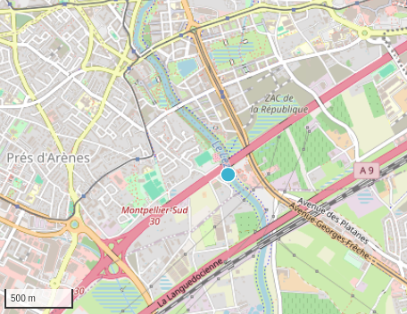
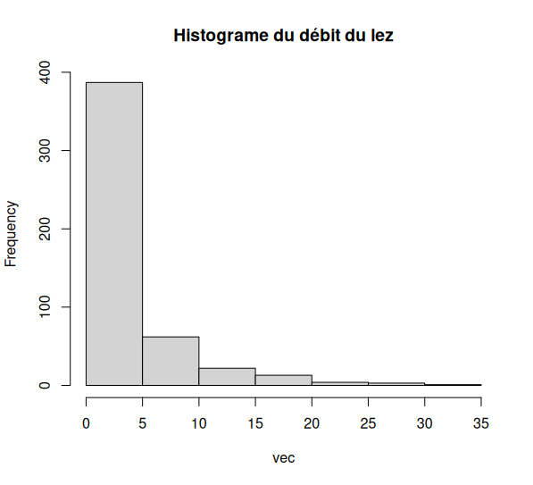
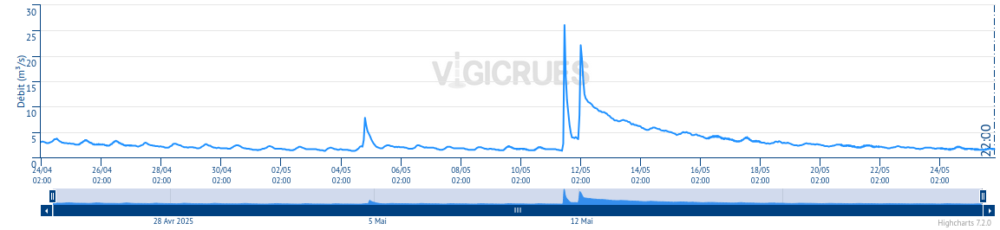
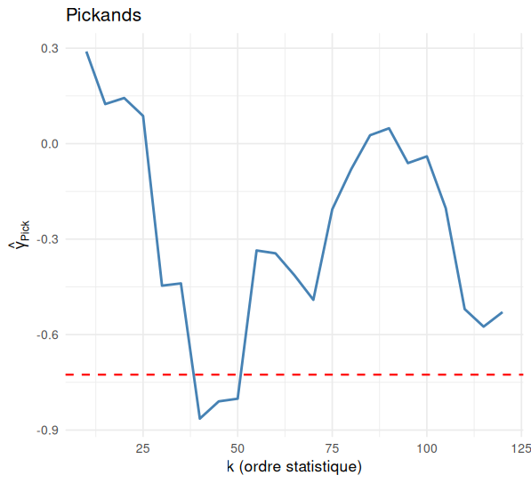

Étude des valeurs extrêmes univariées
2027-04-05
Introduction
- Etudier des événements : crues, canicules, krachs boursiers, météo …
- Statistiques classiques inadaptées, au lieu de partir de simples variables aléatoires, on part du maximum : \(M_n = \max(X_1, ..., X_n)\)
- Trouver les lois limites de ce maximum pour différentes formes de queues de distribution
Le résultat central
Contexte
On suppose avoir un échantillion iid.
Intuition naïve : \[ \quad F_{M_n}(t) = \mathbb{P}(M_n \le t) = \mathbb{P}(X_1 \le t,...,X_n \le t) \\ =\mathbb{P}(X_1 \le t)^n = F^n(t) \xrightarrow[n \to \infty]{} \begin{cases} 0 & \text{si} \; t \in ]- \infty , t^*]\\ 1 & \text{si} \; t \geq t^* \end{cases} \]
Idée : comme pour le TCL, on prend deux suites \((a_n)\) et \((b_n)\) pour que : \[ \mathbb{P}\left( \frac{M_n - b_n}{a_n} \leq x \right) \xrightarrow[n \to \infty]{} G(x) \]
Théorème de Fisher-Tippett-Gnedenko
La fonction de repartition limite est donnée par : \[ G_{\mu, \sigma, \gamma}(x) = \exp\left\{-\left[1 + \gamma \left(\frac{x - \mu}{\sigma} \right)\right]^{-1/\gamma} \right\}. \]
Cela correspond à :
Loi de Fréchet \(\gamma < 0\)
Loi de Gumbel \(\gamma = 0\)
Loi de Weibull \(\gamma > 0\)
Idée de la démonstration
Pour \(z\) bornée, on a :
\[ \mathbb{E}\!\Bigl[ z\!\bigl(\tfrac{M_n-b_n}{a_n}\bigr) \Bigr] = \int_{-\infty}^{\infty} z\!\bigl(\tfrac{x-b_n}{a_n}\bigr)\; n\,F^{\,n-1}(x)\,dF(x) \]
- Par changement de variable
\(x = Q\!\bigl(1-\tfrac{1}{y}\bigr) = U(y)\)
Ce qui donne :
\[ \int_{0}^{n} z\!\Bigl(\tfrac{U(n/v)-b_n}{a_n}\Bigr) \Bigl(1-\tfrac{v}{n}\Bigr)^{n-1} \, dv \]
Idée de la démonstration
Choix de \(b_n\) \[ b_n = Q(1-\frac{1}{n}) = U(n) \]
Choix de \(a_n\) Pas de forme explicite, mais \(a\) est tel que : \[ \frac{U(xu) - U(x)}{a(x)} \xrightarrow[x\to\infty]{} h_{\gamma}(u) = \begin{cases} \frac{u^{\gamma}-1}{\gamma} \; \text{si} \; \gamma \neq 0 \\ log(u) \; \text{si} \; \gamma = 0 \end{cases} \]
Ainsi, on a :
\[ \int_{0}^{n} z\!\Bigl(\tfrac{U(n/v)-b_n}{a_n}\Bigr) \Bigl(1-\tfrac{v}{n}\Bigr)^{n-1} \, dv \xrightarrow[x\to\infty]{} \int_{0}^{\infty} z\!\bigl(h_\gamma(1/v)\bigr)\,e^{-v}\,dv \]
\[ = \int_{u\in S_\gamma} z(u)\,d\Bigl\{\exp\Bigl[-\left(1+\gamma u\right)^{-1/\gamma}]\Bigr\} \]
Disjonction de cas sur le signe de \(\gamma\)
| Signe de \(\gamma\) | Queue de \(F\) | Forme de \(G_{\gamma}\) | Nom | |
|---|---|---|---|---|
| \(\gamma>0\) | queues lourdes | \(\exp\!\{- (1+\gamma u)^{-1/\gamma}\}\), \(u>-1/\gamma\) | Fréchet | |
| \(\gamma=0\) | décroissance exponentielle | \(\exp\!\{-e^{-u}\}\), \(u\in\mathbb R\) | Gumbel | |
| \(\gamma<0\) | queues bornées | \(\exp\!\{- (1+\gamma u)^{-1/\gamma}\}\), \(u<-1/\gamma\) | Weibull |
Quelques simulations


Estimation de l’indice de queue
Motivations
- Objectif : estimer \(\gamma\) pour pouvoir déterminer la loi limite parmi les 3 possibles
- Deux méthodes classiques :
- Pickands
- Hill
Estimateur de Pickands
- Basé sur les statistiques d’ordre
- Robuste mais sensible à \(k\)
- Fonctionne pour tous les domaines d’attraction
- \[ \hat{\gamma}_p = \frac{1}{\ln(2)} \ln(\frac{X_{n-k+1,n} - X_{n-2k+1,n}}{X_{n-2k+1, n} - X_{n-4k+1, n}}) \]
Simulations pour Pickands

- Instable pour petits (k)
- Plateau vers (k )
- Biais si (k > 10000)
Estimateur de Hill
- Plus performant que Pickands pour les queues lourdes
- Mais ne fonctionne que pour les \(\gamma > 0\)
- \[ \hat{\gamma}_h = \frac{1}{k-1} \sum_{i=1}^{k-1} \left( \log(X_{n-i+1, n}) - \log(X_{n - k + 1, n}) \right) \]
Simulations pour Hill

- Plateau vers (k = 3000)–(4000)
- Bonne estimation pour petits (k)
- Biais si (k) trop grand
Méthodes de simulations
Maxima par blocs
- Principe : division des données en blocs pour ensuite estimer la loi des maxima qui sera une des 3 lois vues auparavant
- Choix à faire sur le nombre de blocs : perdre peu d’information tout en gardant des maxima significatifs
- Existence d’autres estimateurs PWM (moments pondérés) définis d’après : \[ \beta_r = \frac{1}{k} \sum_{i=1}^k \frac{(k - i) \cdots (k - i - r + 1)}{(k - 1) \cdots (k - r)} X_{i,k} \\ \quad \text{pour } r = 1, 2, 3, ..., k > r \]
Dépassement de seuil
Principe : on ne conserve que les observations excédant un certain seuil u qui doit être élevé.
Sous ces conditions, alors F suit une loi de Pareto généralisée : \[ H_{\gamma, \beta}(y) = \begin{cases} 1 - \left(1 + \frac{\gamma y}{\beta} \right)^{-1/\gamma}, & \text{si } \gamma \ne 0, \\ 1 - \exp\left( -\frac{y}{\beta} \right), & \text{si } \gamma = 0. \end{cases} \]
Le seuil u est néanmoins difficile à déterminer : il y a encore une fois un choix à faire.
Comparaison
- La méthode des maxima par blocs est simple à mettre en oeuvre et repose sur une théorie bien fournie (théorème de Fisher-Tippett), toutefois on perd de l’information en l’utilisant
- Le dépassement de seuil repose lui aussi sur une théorie précise et a en général une meilleure précision, mais est moins robuste
- Dans les deux cas, on se trouve face à un dilemme quant à la valeur du seuil ou du nombre de blocs
Application à des données réelles (fleuve du Lez)
Context
- Débits (\(m^3/s\)), du fleuve du Lez issue des 30 derniers jours.

Description


moyenne : 3.547998 \(m^3 /s\)
variance : 21.93014
min : 0.243 et max : 30.9
Objectif : calculer un seuil qui est dépassé que rarement.
Estimation des paramêtres

Conclusion
Conclusion
Façon de fonctionner
Expérience
Parties Théoriques interessante
Perspectives
Si les observations ne sont pas indépendante ?
Si il y’a une tendance ? Et une saisonnalité ?
Dans le cas multidimmensionnel ?
Tests statistiques ?
…
Remerciments
Nous tenons à remercier chaleureusement Mr Nicolas Meyer
pour sa disponibilité et ses retours précis
pour les pistes méthodologiques partagées